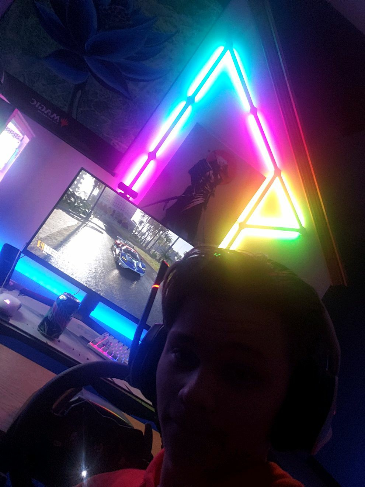

Add me on Discord: Heaven'sEdge#7515
Heyo. Name's Tyler Nelson, 18 years old. I'm from West Chicago, Illinois, and I am majoring in Cyber Security
My family consists of my mother, my father, my sister, and my yellow lab named Wick
Hobbies include Magic the Gathering, Volleyball, and working on cars
Activities include Club Volleyball here at Lewis, CSGO Esports team at Lewis
Fun fact about me is that I make and eat a lot of ramen